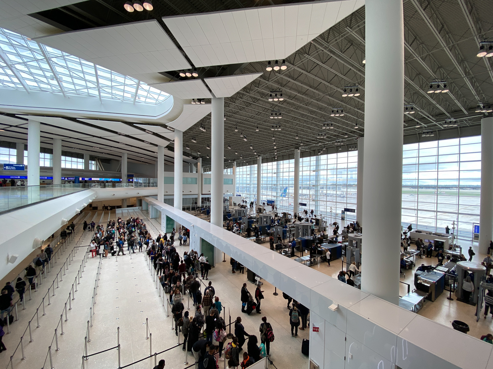

Is airport security useless?
Safety
19 April 2021
The way passengers are screened before flying on airlines is largely shaped by 9/11. Prior, rules were much more lax. Passengers were allowed to bring companions to the gate with them, and could even bring knives and blades onboard. However, security rules became much more strict after 9/11. The Transportation Security Administration, TSA, was created two months after 9/11 to centralize and standardize all airport security measures, which were prior handled by private companies.
All aviation security measures are reactive by nature. The TSA didn't ban liquids until people tried to sneak liquid explosives onboard, didn't start searching shoes and belts until people tried sneaking things through, etc. This means that, for the most part, security agencies are trying to catch up to threats, rather than proactively taking measures to prevent threats before they can happen.
During penetration testing (n=70), the Department of Homeland Security attempted to bring weapons and explosives through TSA checkpoints, which they were able to do over 95% of the time, despite stringent security measures. So, it's quite clear that the TSA isn't as effective as we might expect or hope for it to be, considering the amount of trust we place in them for our safety.
A security officer at Aden Adde International Airport in Mogadishu, Somalia monitors an x-ray machine. Airports are now some of the most secure public spaces in the world. Photo by Tobin Jones; public domain.
In light of some of these findings, some have labeled the TSA useless, a waste of time and money, and "security theater". While it's certainly true that the TSA didn't live up to expectations during those tests, it's still overwhelmingly necessary. Just imagine getting on a flight in this day and age without going through a security checkpoint. Would you feel safe?
The TSA's role in commercial aviation is not only to detect physical threats, but to make passengers feel safe and secure in the sterile area and on their flight. In aviation, psychological passenger comfort makes flying safer by reducing anxiety and paranoia. In a way, airport security is security theater, but that's not a bad thing, and it's by design. Sure, they need to do a lot better on their threat detection, but they do catch many unsafe situations and stop them. The TSA's social media channels are full of blades and weapons they've found in passenger bags.
TSA Security Checkpoints at Louis Armstrong New Orleans International Airport (MSY). Photo by Jonathan Cutrer on Flickr; CC BY-NC 2.0.
How might we improve airport security? The security procedures at Israel's Ben Gurion International Airport have been hailed as some of the most effective in the world, with no flight leaving the airport having ever been hijacked. They use a risk-based assessment to screen the passengers themselves through behavioral psychology techniques, as well as their belongings and physical person. However, the method is not without flaws. There have been several concerns about profiling, as those labeled high-risk are disproportionately Arab and Palestinian. Attempts at risk-based security in the United States have been shown to discriminate against people of color, especially Middle-eastern and Black people.
Overall, airport security has come a long way since 9/11, and inflight hijackings have been significantly reduced and are now exceedingly rare. Airport security ultimately makes aviation safer and more comfortable for passengers, crew, and other airport personnel.
References
- Jansen, Bart. "Hijackings rare after 9/11 security improvements". USA Today, 2016. https://www.usatoday.com/story/news/2016/03/29/hijackings-rare-after-911-security-improvements/82375474/.
- Levenson, Eric. "The TSA Is in the Business of 'Security Theater,' Not Security". The Atlantic, 2014. https://www.theatlantic.com/national/archive/2014/01/tsa-business-security-theater-not-security/357599/.
- Liebermann, Oren. "In airport security, many say Ben Gurion in Israel is the safest". CNN Travel, 2016. https://www.cnn.com/travel/article/ben-gurion-worlds-safest-airport-tel-aviv/index.html.
- Matthews, Dylan. "The TSA is a waste of money that doesn't save lives and might actually cost them". Vox, 2016. https://www.vox.com/2016/5/17/11687014/tsa-against-airport-security.
- O'Connor, Lydia. "This Is What It Was Like To Go To The Airport Before 9/11". HuffPost, 2016. https://www.huffpost.com/entry/airports-before-911_n_57c85e17e4b078581f11a133.
- Raz-Chaimovich, Michal. "Tough Israeli airport security can be insulting". Globes Israel, 2019. https://en.globes.co.il/en/article-tough-israeli-airport-security-can-be-insulting-1001287094.